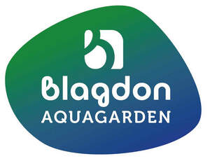

Trade Mark Journal No.2026/005 30 January 2026
UK00004312813 18 December 2025 (1,7,11,19,21,22,26,31,35)

- Class 1
- Chemical preparations for testing water; water-treatment and water-conditioning chemicals and preparations; biological preparations and treatments for pond water; lime-neutralising preparations; fertilizers; plant-growth preparations; plant-growing media and materials; plant food; filling and repairing preparations and material for concrete ponds and PVC/rubber pond liners, namely, epoxy resins, pond paint (namely, acrylic resins), liner glue; waterproofing preparations; filtering materials; adhesives for repairing pools and pond liners; the aforementioned goods not including chemicals for purifying water that contain salt or are salt-based.
- Class 7
- Pumps; aerators; aerating pumps for ponds and aquaria; parts and fittings for all the aforementioned goods; the aforementioned goods not including apparatus or machines for purifying water using chemicals containing salt.
- Class 11
- Apparatus for water supply; apparatus for use with ponds and aquaria; lighting apparatus; underwater lights; water aerating apparatus; water filtering and water purifying apparatus; water softening apparatus and machines; water heaters; fountains, fountain jets, spray rings; plugs, sockets; parts and fittings for all the aforementioned goods; the aforementioned goods not including apparatus or machines for purifying water using chemicals containing salt.
- Class 19
- Pools and ponds; garden ponds; feature pools; waterproof pond liners; watercourse and waterfall shapes and channels, all for use in the creation of watercourses and waterfalls; garden ornaments of stone; decorative items for ponds; statues of stones; fillers; gravel for ponds and aquaria; parts and fittings for all the aforementioned goods.
- Class 21
- Aquaria; containers and baskets for plants; decorative articles for aquaria.
- Class 22
- Covers for water holding structures; rigid or semi-rigid covers for water holding structures; pond covers; rigid or semi-rigid pond covers; pond covers in the form of grids or meshes; semi-rigid plastic materials; liner patches; parts and fittings for all the aforementioned goods.
- Class 26
- Plastic plants and flowers; plastic plants and flowers for decorating aquariums.
- Class 31
- Animal foodstuffs; live fish; plants; arrangements of the aforesaid goods; parts and fittings for all the aforementioned goods.
- Class 35
- Wholesale services and retail services in relation to chemical preparations for testing water, water-treatment and water-conditioning chemicals and preparations, biological preparations and treatments for pond water, lime-neutralising preparations, fertilizers, plant-growth preparations, plant-growing media and materials, plant food, filling and repairing preparations and material for concrete ponds and PVC/rubber pond liners, namely, epoxy resins, pond paint (namely, acrylic resins, waterproof coating agents), liner glue, liner patches, waterproofing preparations, filtering materials and adhesives for repairing pools and pond liners; wholesale services and retail services in relation to pumps, aerators, aerating pumps for ponds and aquaria and their parts and fittings; wholesale services and retail services in relation to apparatus for water supply, apparatus for use with ponds and aquaria, lighting apparatus, underwater lights, water aerating apparatus, water filtering and water purifying apparatus, water softening apparatus and machines, water heaters, fountains, fountain jets, spray rings, plugs and sockets; wholesale services and retail services in relation to pools and ponds, garden ponds, feature pools, waterproof pond liners, watercourse and waterfall shapes and channels, all for use in the creation of watercourses and waterfalls, garden ornaments, decorative items for ponds, statues, fillers and gravel for ponds and aquaria; wholesale services and retail services in relation to containers and baskets for plants and decorative articles for aquaria; wholesale services and retail services in relation to aquaria; wholesale services and retail services in relation to covers for water holding structures, rigid or semi-rigid covers for water holding structures, pond covers, rigid or semi-rigid pond covers, pond covers in the form of grids or meshes and semi-rigid plastic materials; wholesale services and retail services in relation to plastic plants and flowers, plastic plants and flowers for decorating aquariums; wholesale services and retail services in relation to animal foodstuffs, live fish, plants and arrangements of the aforesaid goods.
sera Werke Heimtierbedarf J. Ravnak GmbH & Co. KG
Representative: Haseltine Lake Kempner LLP